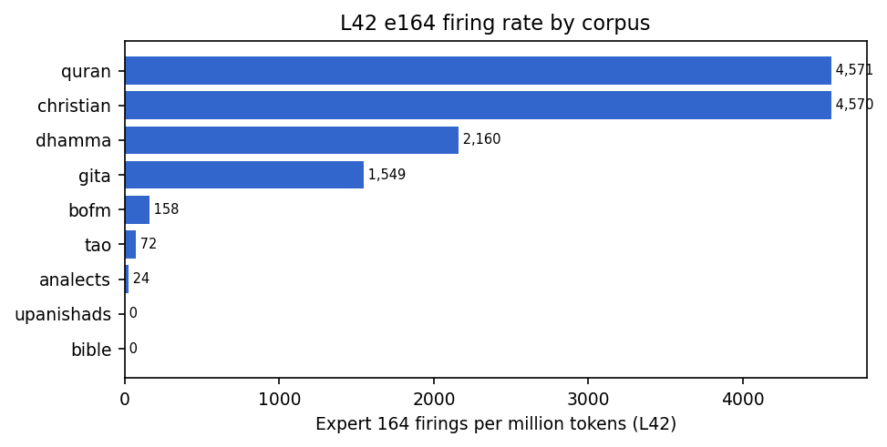

DeepSeek-V4-Flash-0731 expert routing on religious texts
| Wiki pages | |
|---|---|
| Methods & harness | How the study works: model spec, the Gate source, read-only hooks, REAP metric, fail-closed guarantees, faithfulness verification, infrastructure |
| Data & corpora | Every corpus (observed, staged, raw sources), record formats, aggregates, HuggingFace and GitHub artifacts |
| Results & findings | All findings with charts: e164 across corpora, effective expert counts, shared backbone, hard specialists, Jaccard, retractions |
| Experiments | All 12 experiments: hypothesis, design, status, results, priority queue |
| Code reference | Every script in the study: purpose, inputs, outputs |
| Operations (live) | What's running now, deployment queue, runbook, incident log |
| Roadmap & ideas | What's next, backlog, known open problems |
| DeepSeek-V4-Flash-0731 REAP Routing Study | |
| Read-only interpretability observation | |
| Study type | Observational, read-only |
|---|---|
| Model | DeepSeek-V4-Flash-0731 |
| Architecture | Sparse MoE (43 layers, 256 experts, top-6) |
| Gate function | sqrt(softplus(x)) |
| Corpora | 9 religious traditions + theology corpus |
| Tokens observed | 22,179,407 (completed) ~37M (wave-2 running) |
| Records | 2,749 completed + 2,295 running |
| Checkpoint rev | 9e165c30 |
| Started | August 2026 |
| Status | Ongoing |
| Data | 0xSero/deepseek-v4-flash-reap (private, HF) |
| Code | 0xSero/dsv4-reap-routing |
| Reviews | Claude Opus 5, Kimi K3 |
DeepSeek-V4-Flash-0731 expert routing on religious texts is an ongoing interpretability study that observes how a sparse mixture-of-experts language model routes tokens across its 256 expert networks when processing religious and theological text. The study uses a read-only, fail-closed harness to record every routing decision — which experts are selected, with what gate weights, and with what activation magnitudes — for every token at every layer, across over 22 million tokens spanning nine religious traditions (the KJV Bible, Qur'an, Book of Mormon, Bhagavad Gita, Tao Te Ching, Dhammapada, Analects, Upanishads, and 1,267 books of historical Christian literature).
The study's original headline finding — that expert #164 at layer 42 was a "not-memorized-scripture" detector (exactly zero firings across the entire KJV Bible) — was retracted after an external review by Claude Opus 5 identified a digit-density confound: the corpus preparation pipeline strips verse numbers from the Bible, making it 0.0000% digits, while all other corpora contain digits at varying densities. The finding that survives is more modest: the model's routing is driven by surface-form text statistics (digit density, predictability), not by theological content. Several controlled experiments are staged to confirm this.
- 1 Abstract
- 2 Hypotheses
- 3 Open questions
- 4 Model and methods
- 4.1 Model specification
- 4.2 Observation harness
- 4.3 REAP metric
- 4.4 Fail-closed guarantees
- 5 Data inventory
- 6 Data structures
- 7 Results — what survives
- 8 Retracted claims
- 9 External review findings
- 10 Experiment pipeline
- 11 Verification and integrity
- 12 Resources
1. Abstract[edit]
This study observes the expert-routing behavior of DeepSeek-V4-Flash-0731 — a sparse mixture-of-experts model with 43 layers, 256 routed experts per layer, and top-6 gating using a sqrt-softplus score function — across a large corpus of religious and theological texts. The corpus spans nine traditions plus a stratified theology selection covering Jesus, Lucifer, Judaism origins, Moloch, and Saturn worship, totalling over 22 million observed tokens. A read-only, fail-closed harness records per-token routing decisions for every layer of every sample.
The study's original headline finding — that expert #164 at layer 42 was a "not-memorized-scripture" detector — was retracted after external review identified a digit-density confound: the corpus preparation pipeline strips verse numbers from the Bible, making it 0.0000% digits, while all other corpora contain digits. Expert #164's firing rate is perfectly monotone in digit density. This wiki documents what was found, what was wrong, what survives, and what experiments are needed to resolve the remaining questions.
2. Hypotheses[edit]
The study is organized around the following hypotheses, each with a current status:
- H1 — Digit-specialist hypothesis pending Exp 11/12
-
Expert #164 at layer 42 (and a cluster of ~29 co-firing experts including e27, e68) is a digit / citation-apparatus detector, not a religious-text specialist. Its firing rate is driven by the density of numeric characters (verse numbers, chapter references, footnote markers, roman numerals) in the input, not by theological content or memorization status. The KJV Bible's exact-zero is an artifact of verse-number stripping during corpus preparation.
Strong circumstantial evidence (perfectly monotone in digit density, 383× range within Christian corpus alone), but the causal mechanism is not yet confirmed by controlled minimal-pair experiments.
- H2 — Register-independence hypothesis pending
-
If H1 is correct, then expert routing differences between religious traditions are not driven by theology but by surface-form features (digit density, punctuation patterns, sentence length, type-token ratio). Controlling for these covariates should eliminate most inter-tradition routing differences.
Requires Exp 12 (minimal-pair digit test) and regression analysis controlling for surface-form covariates.
- H3 — Effective-expert-count as surprisal proxy survives
-
The effective number of experts activated (exp-Shannon entropy of the expert-frequency distribution) at late layers is a proxy for the model's per-token surprisal: more predictable text (Gita, chant-like) uses fewer experts; less predictable text (Christian theology, 2,000 years of arguments) uses more. This is a text-statistical property, not a religious one.
The ordering (Gita 26 < Qur'an 43 < Bible 65 < Christian 111) is reproducible and directionally consistent with perplexity. The 111→70 per-sample collapse (pooling artifact) is noted, but the ordering survives at both aggregate and per-sample levels.
- H4 — Shared-routing backbone survives
-
A core set of high-frequency experts is shared across all traditions at every layer, forming a "routing backbone" that is tradition-agnostic. Inter-tradition differences are concentrated in a thin layer of specialists (like e164) and in the hash-routed layers (L0–2), not in the bulk of the network.
15 of top-20 L42 experts shared between Bible and Qur'an; hash-routed L0–2 show corpus-invariant routing (by design: expert assignment is predetermined per token ID). The "layer sandwich" sub-claim was retracted as a metric artifact.
- H5 — No religion-specific routing pending secular null
-
The model does not organize religious texts by tradition, doctrine, or faith. It organizes them by what the text is doing to the model: surface-form statistics, predictability, and digit/punctuation density. Theology is present in the shared mid-layer backbone, but the edges of the network respond to simpler features.
Requires Exp 3 (secular null baseline stratified by digit density) to confirm that non-religious English with matched digit density produces similar routing patterns.
3. Open questions[edit]
Questions the study is actively trying to answer, ordered by priority:
- Q1
Is e164 a digit detector (responds to any numeral), a citation-structure detector (responds to "N:M" verse-reference patterns specifically), or something else entirely?
Test: Exp 12 (digit minimal-pairs: same Bible text in 3 versions — digit-free, verse-numbers-restored, arbitrary-numerals) + Exp 11 (context dump of e164/e27/e68 firing contexts with ±20 token windows).
- Q2
Does e164 fire on non-KJV translations of the same content (Genesis 1–3 in WEB, ASV, BBE, WEBBE), all digit-free? If yes → content/memorization drives it; if no → register or digit density drives it.
Test: Exp 1 (5 public-domain translations, all verified 0.0000% digits, ready to deploy).
- Q3
Are the inter-tradition routing differences (Jaccard overlaps, effective-expert counts) entirely explained by surface-form covariates (digit %, punctuation %, sentence length, TTR)?
Test: Regression analysis on existing data (partial effects controlling for covariates) + Exp 3 (secular null with matched digit density).
- Q4
Is the effective-expert-count ordering (Gita < Qur'an < Bible < Christian) truly a surprisal proxy, or does it reflect something tradition-specific?
Test: Correlate effective-expert-count with model perplexity per sample; compare against secular text of matched predictability.
- Q5
What does the model's routing look like on topic-specific theology (Jesus, Lucifer, Moloch, Saturn worship) vs. the broad-tradition corpora? Are there topic-specific routing signatures, or does the same digit/predictability structure dominate?
Test: Theology observation (1,090 records / 9.4M tokens, staged for GPU deployment). Includes per-sample digit density in manifest for controlled analysis.
- Q6
Can the bounded-Jacobian probe (layer-0 leverage ≈3.9× later layers) be systematically validated, or is it an artifact of the 16-random-projection approximation?
Test: Increase projection count; compare against exact Jacobian norms on small samples. Currently low priority.
4. Model and methods[edit]
4.1 Model specification
| Parameter | Value |
|---|---|
| Architecture | DeepSeek-V4-Flash-0731 (sparse MoE) |
| Layers | 43 |
| Routed experts / layer | 256 |
| Activated experts / token | 6 (top-6) |
| Gate score function | sqrt(softplus(x)) — sqrt-softplus |
| Route scale | 1.5 |
| Hidden dimension | 4,096 |
| Vocabulary | 129,280 |
| Expert precision | fp4 (attention fp8) |
| Hyper-connections | hc_head ×4 |
| Hash-routed layers | L0–L2 (n_hash_layers=3; expert IDs predetermined per token ID) |
| Group-limited routing | None (o_groups=8 is an attention parameter) |
| Checkpoint revision | 9e165c30e2704aec5d9d593cce3eebd58bbef1cb |
| Deployment | TP2 across 2 DGX Spark nodes |
4.2 Observation harness
The harness (observe_religious.py) runs the model in read-only inference mode with no weight modifications. A forward hook on the router Gate module records, for every token at every layer:
- Selected expert indices — the 6 experts chosen by topk (or hash-predetermined for L0–2)
- Gate weights — the sqrt-softplus scores (normalized) for the selected experts
- Activation norms — L2 norm of each expert's output vector per token
4.3 REAP metric
REAP (Routing-weight × Expert Activation Product) is defined per expert per layer as:
REAP = mean(gate_weight) × mean(activation_norm)
computed across all tokens where the expert fired. Text profiles are defined as per-layer top-20 expert sets ranked by frequency-weighted mean REAP. Inter-text similarity is measured by Jaccard overlap of these profiles.
4.4 Fail-closed guarantees
Every record is fsynced to JSONL line-by-line. Before acceptance, the harness asserts:
Σ expert_frequencies == seqlen × top_k(6)on every layer of every record — guarantees no token routing was lost(category, sample_index)keys are unique across the entire dataset — guarantees no duplicate samples- English-language filter via stopword regex — rejects non-English text
All 2,749 completed records pass with zero violations. The harness implementation was verified line-for-line against the real Gate.forward source code (sqrtsoftplus, bias-for-selection-only, hash layers, plain topk, no group masking).
5. Data inventory[edit]
5.1 Observation corpora (deployed on GPU)
| Corpus | Records | Tokens | Source / notes |
|---|---|---|---|
| KJV Bible | 1,189 | 1,045,776 | 1189 chapters, verse numbers stripped → 0.0000% digits |
| Christian literature (wave 1) | 1,267 | 20,409,440 | 3,705-book Gutenberg scrape, 32 topics, 16k window/book |
| Qur'an (English) | 115 | 258,122 | Gutenberg, Pickthall translation |
| Book of Mormon | 30 | 342,614 | Gutenberg pg17 |
| Bhagavad Gita | 18 | 29,690 | Gutenberg (small n — CI imprecise) |
| Tao Te Ching | 81 | 13,852 | Gutenberg |
| Dhammapada | 26 | 16,203 | Gutenberg pg2017 |
| Analects | 20 | 42,041 | Gutenberg |
| Upanishads | 3 | 21,669 | Gutenberg (n=3 — directional only) |
| Total (core + wave-1) | 2,749 | 22,179,407 |
5.2 Staged corpora (not yet observed on GPU)
| Corpus | Records | Tokens | Status |
|---|---|---|---|
| Christian wave-2 | 2,295 | ~37M | running ~45% |
| Theology stratified selection | 1,090 | 9,380,481 | staged — Jesus 400, Judaism 137, Lucifer 46, Moloch 25, Saturn 32, books 450 |
| Exp 12: digit minimal-pairs | 111 | ~330k | staged — 12 KJV chapters × 3 digit versions |
| Exp 1: multi-translation Genesis | 5 | ~52k | staged — KJV, WEB, ASV, BBE, WEBBE, all 0 digits |
5.3 Source corpus (raw, before tokenization)
| Source | Volume | Notes |
|---|---|---|
| Wikipedia theology articles | 7,508 files | 6 topics: Jesus, Lucifer, Judaism origins, Judaism, Moloch, Saturn |
| Project Gutenberg theology books | 3,827 books | 40+ topic searches, 1.6B chars (~400M tokens) |
| Project Gutenberg Christian books | 3,705 books | 32 topic searches (wave-1 source) |
| Project Gutenberg Christian wave-2 | 2,295 books | Extended topic set |
5.4 J-lens probe data
80 samples across all 8 core traditions. Per-sample per-layer next-token distributions (logit lens) and bounded-Jacobian norms (16 random projection directions). All 80/80 complete. Stored as compressed JSONL.
6. Data structures[edit]
6.1 Layer 1 — Corpus samples
Location: corpus/samples/*.jsonl. One JSON object per line, immutable, with SHA-256 and manifest sidecars.
{
"sample_id": "bible_gen_001",
"category": "bible",
"text": "In the beginning God created the heaven and the earth...",
"char_count": 4203,
"digit_count": 0,
"digit_density": 0.0
}
6.2 Layer 2 — Observation records
Location: full_obs.jsonl (1,482 records, 560 MB), christian_obs.jsonl (1,267 records, 541 MB). Fsynced line-by-line.
{
"sample_id": "bible_gen_001",
"category": "bible",
"sample_index": 0,
"seqlen": 2048,
"layers": [
{
"expert_frequencies": [621032, 457504, 424377, ...], // [256] int; Σ == seqlen×6
"activation_norms": [0.0, 2.34, 1.87, ...], // [256] mean activation magnitude
"gate_weights": [0.001, 0.034, ...], // [256] softmax diagnostic
"reap_score": [0.0, 0.0796, ...], // [256] gate_weight × activation_norm
"routed_experts": [0, 3, 7, 12, 45, 89, ...] // unique expert IDs (NOT per-token)
},
// ... 43 entries, one per layer
]
}
gate_weights is a softmax over all 256 experts — a diagnostic, NOT the routing score function (which is sqrt-softplus). routed_experts stores unique expert IDs, not per-token routing — this is why Exp 11 needs a GPU re-run with --raw-budget-tokens.
6.3 Layer 3 — Aggregates
Location: core_agg.json, christian_agg.json. Per-category sums of frequencies and mean REAP, keyed by layer.
{
"bible": {"n": 1189, "tok": 1045776,
"freq": {"0": [...256], "1": [...256], ...},
"reap": {"0": [...256], "1": [...256], ...}},
"quran": { ... }
}
6.4 Layer 4 — J-lens
Location: jlens_output/*.jsonl. Per-position per-layer next-token distributions and bounded Jacobian norms.
{
"sample_id": "bible_gen_001",
"layers": [
{
"top_tokens": [[" Spirit", 0.7668], [" the", 0.0821], ...],
"jacobian_norm": 1268.3
}, ...
]
}
6.5 Layer 5 — Publication artifacts
| Artifact | Location |
|---|---|
| Technical wiki | wiki.html (GitHub Pages) |
| Narrative page | index.html (GitHub Pages) |
| This research wiki | RESEARCH_WIKI.html |
| Experiment specs | EXPERIMENTS.md |
| Review brief | CONSULT_REVIEW.md |
| External reviews | reviews/claude_opus5_review.md, reviews/kimi_k3_review.md |
| Sanitized code | code/ (GitHub + HF) |
| Corpus manifests | corpus/manifests/ (GitHub + HF) |
| Raw observations | HF observations/ subdatasets (gzipped JSONL) |
| Docker container | Dockerfile + docker-compose.yml |
7. Results — what survives[edit]
7.1 Effective expert count survives
The exponential-Shannon entropy of the expert-frequency distribution at layer 40 gives an "effective number of experts" — how many specialists the model actually uses:
| Corpus | Effective experts (L40) | Per-sample collapse |
|---|---|---|
| Bhagavad Gita | 26 | 24.3 |
| Qur'an | 43 | 39.5 |
| KJV Bible | 65 | 54.1 |
| Christian literature | 111 | 70 |
The aggregate 111 collapses to 70 per-sample (pooling artifact — rare experts that fire in one book but not another inflate the aggregate). But the ordering survives at both levels, consistent with the surprisal interpretation: the Gita (one long repetitive chant) is the most predictable; 2,000 years of heterogeneous Christian theology is the least.
7.2 Shared routing backbone survives
At layer 42, 15 of the top-20 experts (by frequency) are shared between Bible and Qur'an. Hash-routed layers L0–L2 show corpus-invariant routing by design — expert assignment is predetermined per token ID via tid2eid, so the same token always goes to the same expert regardless of context.

7.3 Hard specialists (descriptive) verified as real
Several individual experts show extreme inter-corpus firing gaps, confirmed by matched-n bootstrap (5,000 resamples):
| Expert | Bible (/M tok) | Other corpus | Ratio | Bootstrap CI |
|---|---|---|---|---|
| L42 e164 | 0.0 | Qur'an 4,571 / Christian 4,565 | ∞ | 5000/5000 bootstrap = 0.000 |
| L41 e34 | 5.7 | Qur'an 5,377 | ~940× | [21.7–26.8] at n=115 |
| L34 e33 | 2.7 | Dhammapada 4,358 | ~1,600× | [2013–7107] at n=26 |
These are real routing phenomena — not small-sample artifacts. But their interpretation is contested: e164 is now hypothesized to be a digit detector (H1), not a "not-memorized-scripture" detector.
7.4 Bounded Jacobian survives (with caveat)
Layer-0 output influence (Jacobian norm ≈ 1,268) is ≈3.9× that of later layers (L10: 371, L20: 363, L30: 378, L42: 320). Caveat: uses only 16 random projection directions, not a full Jacobian.
7.5 Inter-tradition Jaccard (top-20 REAP, overall) survives
Pairwise Jaccard overlap of top-20 REAP experts across the 8 core traditions + Christian literature (overall, not per-layer):
| bible | quran | tao | gita | dhamma | bofm | analects | upan. | christian | |
|---|---|---|---|---|---|---|---|---|---|
| bible | 1.00 | 0.48 | 0.42 | 0.45 | 0.39 | 0.44 | 0.29 | 0.21 | 0.33 |
| christian | 0.33 | 0.43 | 0.44 | 0.30 | 0.33 | 0.33 | 0.36 | 0.48 | 1.00 |
Christian literature is the Bible's least similar partner (0.33). Per-layer top-5 profiles give different numbers — the metric matters.
8. Retracted claims[edit]
8.1 "Not-memorized-scripture" interpretation of e164. Claim: Expert #164 at layer 42 never fires on the KJV Bible because the model has it memorized and "recites from memory." Retraction: Claude Opus 5 review identified that prepare_corpus.py strips verse numbers from the Bible, making it 0.0000% digits. All other corpora contain digits. e164's firing rate is perfectly monotone in digit density across ten deciles (0 → 16,448/M). Zero-digit Christian control fires at 4.9/M. The digit-density confound fully explains the pattern. e164 is now hypothesized to be a digit/citation-apparatus detector (H1).
8.2 "Layer sandwich" pattern. Claim: Bible ↔ Christian overlap is low at L0–2 (surface), high at L3–6/19 (meaning), low at L39–42 (voice). Retraction: Kimi K3 review could not reproduce this. The pattern is a reap_score artifact — per-firing mean REAP is dominated by noise floor from experts firing <35 times in 98,304 slots. It inverts on expert_frequencies (L0 = 0.905, highest). The write-up also mixed per-layer top-5 profiles with a top-20 REAP claim — a metric inconsistency.
8.3 Genesis 1:2 logit-lens claim. Claim: Logit-lens decoding surfaces "Spirit" at 76.7% at layer 30. Retraction: Kimi K3 review found the token at position 30 is ' deep', not ' Spirit'. The actual ' Spirit' is at position 34. The intermediate layer predicts a token 4 positions ahead while the final layer correctly predicts the immediate next token ('.'). This is n=3, mislabeled, cherry-picked, and uses an uncalibrated readout path.
8.4 Effective-expert count = 111 (as published). Claim: Christian literature uses 111 effective experts at layer 40. Partial retraction: The 111 is a pooling artifact — it collapses to 70 per-sample. The ordering (Gita < Qur'an < Bible < Christian) survives at both levels.
9. External review findings[edit]
9.1 Claude Opus 5 review (570 lines)
The most consequential finding: the digit-density confound. Key points:
- Identified that
prepare_corpus.pystrips KJV verse numbers, making Bible 0.0000% digits while all other corpora contain digits - Digit density deciles are perfectly monotone (0 → 16,448/M) within the Christian corpus alone — a 383× range in e164 firing rate generated entirely within one tradition
- Zero-digit Christian control: e164 fires at 4.9/M (vs 4,565/M at full digit density)
- e164 is not a singleton: e27 (twin), e68 (more extreme), ~29-expert cluster
- Recommended Exp 11 (context dump) and Exp 12 (digit minimal-pairs) as decisive tests
9.2 Kimi K3 review (264 lines)
Methodological and reproducibility findings:
- Jaccard metric inconsistency: write-up mixed per-layer top-5 profiles (0.53 matrix) with top-20 REAP claim (sandwich) — two different metrics presented as one
- Logit-lens mislabel: position 30 token is
' deep', not' Spirit'; actual' Spirit'is at position 34 - Per-layer top-20 REAP Jaccard for Bible ↔ Christian = mean 0.11 (not 0.54–0.74)
- Recommended Exp 9 (position/length confound) as mandatory prerequisite, then Exp 1 as interpretive killer
- Verified: bounded Jacobian norms, effective-expert-count ordering, and e164 hard-zero are reproducible from committed artifacts
9.3 GPT-5.6 / Codex review
Could not be obtained — codex CLI hit usage limit (resets Aug 20, 2026).
10. Experiment pipeline[edit]
10.1 Prioritized experiments
| # | Experiment | GPU time | Status | What it settles |
|---|---|---|---|---|
| Exp 12 | Digit minimal-pairs | Sub-hour | staged | Citation-structure vs bare-numeral: same Bible text, 3 digit versions (0% / 2.23% / 2.83%) |
| Exp 11 | e164 context dump | Small | staged | What tokens trigger e164/e27/e68? Needs --raw-budget-tokens GPU re-run |
| Exp 1 | Multi-translation Genesis | Sub-hour | staged | Register vs memorization: 5 public-domain translations, all 0 digits |
| Exp 3 | Secular null baseline | ~4h | not staged | Does non-religious English with matched digit density produce similar routing? |
| Theology | Theology observation | ~16h | staged | Topic-specific routing: Jesus, Lucifer, Moloch, Saturn — 1,090 records |
| Exp 8 | Sorted L42 freq check | None | done | Permutation confound killed (15/20 shared). Note: tested frequencies, not REAP channel |
| Exp 9 | Position/length confound | None | answered | Length-matched bands: Bible 0 / Qur'an 4,383/M — not a length artifact |
10.2 Deployment order
- Exp 12 (111 samples, sub-hour) — highest priority, settles digit question
- Exp 1 (5 samples, sub-hour) — register vs memorization, all 0 digits
- Exp 11 (small GPU run) — context dump, what tokens trigger the specialists
- Theology observation (1,090 records, ~16h) — topic-specific routing
- Exp 3 (secular null) — after digit question is settled
All experiments wait for wave-2 Christian observation to free the GPU nodes. The 30-minute cron automation monitors progress and deploys automatically.
11. Verification and integrity[edit]
11.1 Harness faithfulness
The observation harness was verified line-for-line against the real Gate.forward source code (model.py:551–589):
- ✓ sqrt-softplus score function:
F.softplus(scores).sqrt() - ✓ Bias shifts scores for topk selection only, does not affect routing weights
- ✓ Hash routing for L0–L2 via
tid2eid[input_ids] - ✓ Plain topk (no group masking)
- ✓ Normalization:
weights /= weights.sum()for non-softmax scores - ✓ Route scale:
weights *= route_scale(1.5)
11.2 Code-level caveats
- The harness replaces the tilelang
sparse_attnkernel andfast_hadamard_transformwith pure-PyTorch equivalents. Authors claim numerical equivalence; any difference would affect routing. gate_weights[256]in records is a softmax diagnostic — NOT the routing score function. The actual function is sqrt-softplus.routed_expertsstores unique expert IDs, not per-token routing. Context-dump experiments (Exp 11) require a GPU re-run with--raw-budget-tokens.
11.3 Data integrity
- All corpus samples have SHA-256 + manifest sidecars
- Fail-closed invariant (Σ freq == seqlen × 6) verified on all 2,749 records, zero violations
- Unique (category, sample_index) verified across all datasets
- All religious corpus text is English (stopword regex filter)
- All source texts are public-domain or freely published (Gutenberg, Wikipedia, bible-api.com)
11.4 Security audit (2026-08-16)
- ✓ HuggingFace: both datasets private (anonymous access → 401)
- ✓ GitHub: no credential values in any file or commit history (git-filter-repo purge, verified 0 matches across all commits)
- ✓ Sanitizer reads password from
$SSHPASSenv var, never embedded in committed files - ⚠️ Password was publicly exposed for ~1 day before purge — rotation recommended
12. Resources[edit]
12.1 HuggingFace (private, access on request)
| Dataset | Files | Contents |
|---|---|---|
0xSero/deepseek-v4-flash-reap | 45 | Consolidated: observations, J-lens, corpus manifests, analysis, sanitized code |
0xSero/deepseek-v4-flash-religious-reap-observations | 11 | Raw observation records (gzipped JSONL) |
12.2 GitHub
| Repo | Contents |
|---|---|
0xSero/dsv4-reap-routing | Wiki, narrative page, sanitized code, manifests, analysis artifacts, Docker, external reviews |
| GitHub Pages | https://0xsero.github.io/dsv4-reap-routing/ |
12.3 Docker
Base image ghcr.io/anemll/dspark-vllm-gx10:0.1.1. One rank per DGX Spark node. Environment: TOKENIZER_ID, TOKENIZER_REV, CKPT_DIR, INPUT, OUTPUT. See docker-compose.yml in the repo.